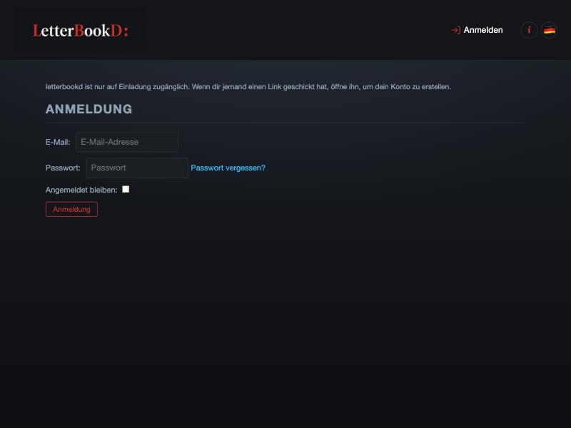

Anmeldung
Wozu es dient: Melde dich in deinem Club an. letterbookd ist privat: Der Zugang erfolgt über einen Einladungslink. Wenn dir ein Link geschickt wurde, folge ihm; ansonsten nutze diese Seite, um deine Sitzung wieder aufzunehmen.

Ablauf
Du landest hier, wenn du nicht angemeldet bist, oder wenn du oben rechts auf „Anmelden“ klickst.
Gib die E-Mail-Adresse deines Kontos und dein Passwort ein und klicke auf „Anmelden“. Mit „Angemeldet bleiben“ bleibst du in diesem Browser eingeloggt.
Über „Passwort vergessen?“ erhältst du eine E-Mail zum Zurücksetzen. Danach kommst du hierher zurück und meldest dich mit deinem neuen Passwort an.
Nach der Anmeldung landest du auf der Startseite.
Aktionsketten
Jede Zeile beschreibt einen Auslöser in der Oberfläche, das sich öffnende Modal/Formular und den erzielten Effekt.
| Auslöser | Modal / Felder | Effekt |
|---|---|---|
| Schaltfläche „Anmelden“ (Hauptformular) | E-Mail (Pflichtfeld), Passwort (Pflichtfeld), Angemeldet bleiben (Checkbox, optional) | Sitzung wird geöffnet, Weiterleitung auf die Startseite. Bei einem Fehler lädt das Formular mit einer eindeutigen Meldung neu (unbekannte Adresse, falsches Passwort). |
| Link „Passwort vergessen?“ | Anforderungsformular per E-Mail (eigene Seite) | An die eingegebene Adresse wird ein Link zum Zurücksetzen gesendet. Folge dem Link, wähle ein neues Passwort und melde dich erneut an. |